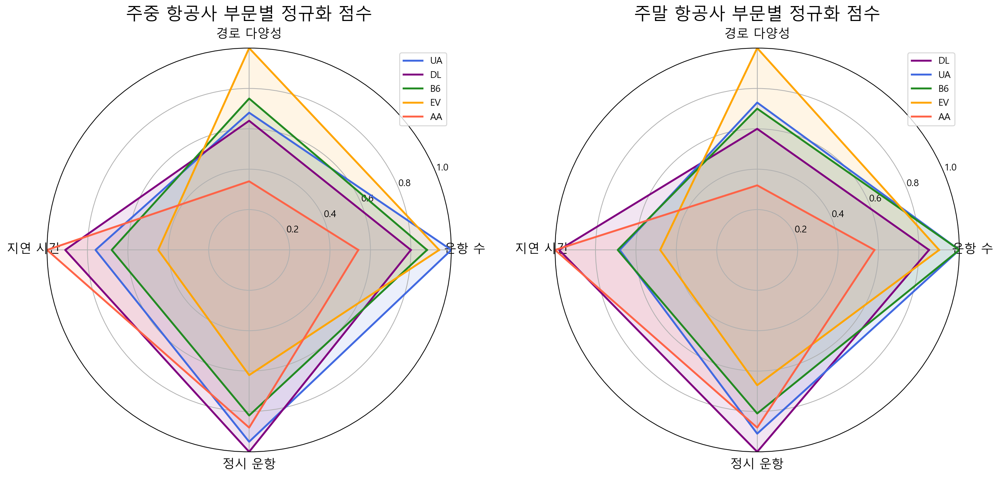

year_x month day dep_time sched_dep_time dep_delay arr_time \
0 2013 1 1 517.0 515 2.0 830.0
1 2013 1 1 533.0 529 4.0 850.0
sched_arr_time arr_delay carrier flight tailnum origin dest air_time \
0 819 11.0 UA 1545 N14228 EWR IAH 227.0
1 830 20.0 UA 1714 N24211 LGA IAH 227.0
distance hour minute time_hour year_y \
0 1400 5 15 2013-01-01T10:00:00Z 1999.0
1 1416 5 29 2013-01-01T10:00:00Z 1998.0
type manufacturer model engines seats speed \
0 Fixed wing multi engine BOEING 737-824 2.0 149.0 NaN
1 Fixed wing multi engine BOEING 737-824 2.0 149.0 NaN
engine
0 Turbo-fan
1 Turbo-fan 항공사 추천
클라이언트에게 추천해줄 top5 항공사 선정
2025-03-21
종합 - 5대 항공사 선정

결론


# 주중/주말 레이더 차트
plt.figure(figsize=(15, 7))
# 주중 레이더 차트
plt.subplot(1, 2, 1, polar=True) # 극좌표(polar) 그래프 생성
categories = section_names
N = len(categories)
# 각도 계산
angles = [n / float(N) * 2 * np.pi for n in range(N)]
angles += angles[:1] # 닫힌 다각형을 위해 처음 값 반복
# x축 라벨 설정
plt.xticks(angles[:-1], categories, size=10)
# y축 범위 설정
plt.ylim(0, 1) # 최댓값 정규화 결과는 0~1 사이. 제일 끝이 1
# 각 항공사별 색상 -> 레이더 차트 선
carrier_colors = {
'UA': 'royalblue',
'AA': 'tomato',
'B6': 'forestgreen',
'DL': 'purple',
'EV': 'orange'
}
# 각 항공사에 대한 레이더 차트 그리기
for i, row in weekday_ranking.iterrows():
carrier = row['carrier']
values = [row['flight_norm'], row['dest_norm'], row['delay_norm'], row['ontime_norm']]
values += values[:1] # 닫힌 다각형을 위해 처음 값 반복
# 선 그리기
plt.plot(angles, values, linewidth=2, linestyle='solid', color=carrier_colors[carrier], label=carrier)
# 영역 채우기
plt.fill(angles, values, alpha=0.1, color=carrier_colors[carrier])
plt.title('주중 항공사 부문별 정규화 점수', pad=30)
plt.legend(loc='upper right')
# 주말 레이더 차트
plt.subplot(1, 2, 2, polar=True)
# x축 라벨 설정
plt.xticks(angles[:-1], categories, size=10)
# y축 범위 설정
plt.ylim(0, 1)
# 각 항공사에 대한 레이더 차트 그리기
for i, row in weekend_ranking.iterrows():
carrier = row['carrier']
values = [row['flight_norm'], row['dest_norm'], row['delay_norm'], row['ontime_norm']]
values += values[:1] # 닫힌 다각형을 위해 처음 값 반복
# 선 그리기
plt.plot(angles, values, linewidth=2, linestyle='solid', color=carrier_colors[carrier], label=carrier)
# 영역 채우기
plt.fill(angles, values, alpha=0.1, color=carrier_colors[carrier])
plt.title('주말 항공사 부문별 정규화 점수', pad=30)
plt.legend(loc='upper right') # 범례설정, loc으로 범례 위치 설정
plt.tight_layout()
plt.show()